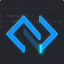

Cross-device development environment. Host and mobile views, local files, sessions, command palette. Early Access — files stay in this browser.
Open Early Access GitHub Tutorial
Gemini’s draft leaked a prompt into the UI and had no working JavaScript. That original is kept in original/. This build actually edits files.